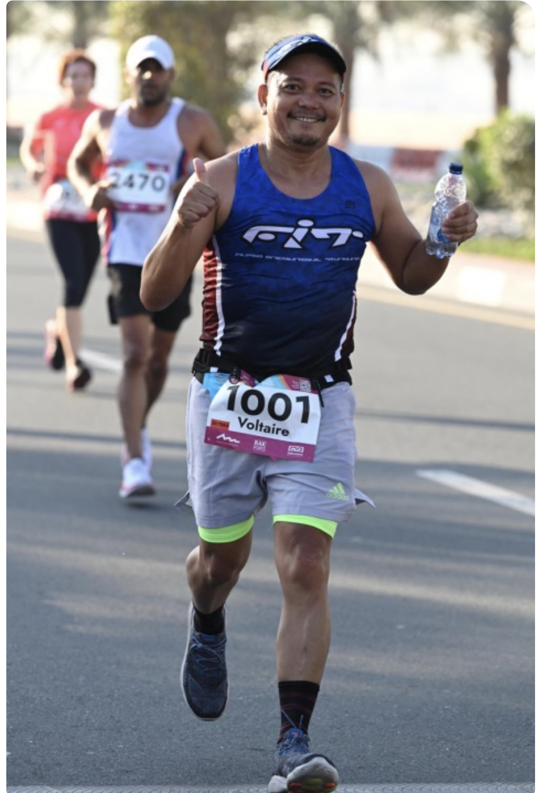
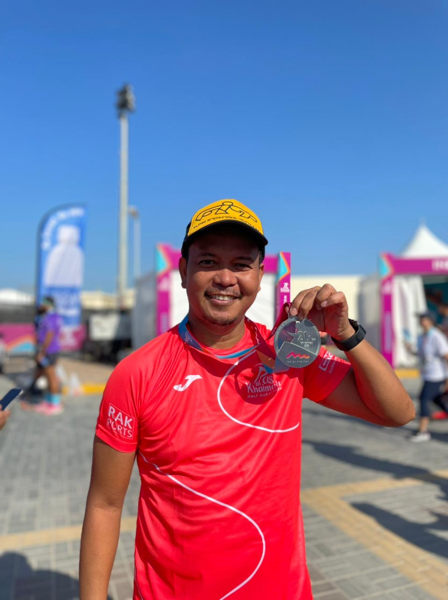
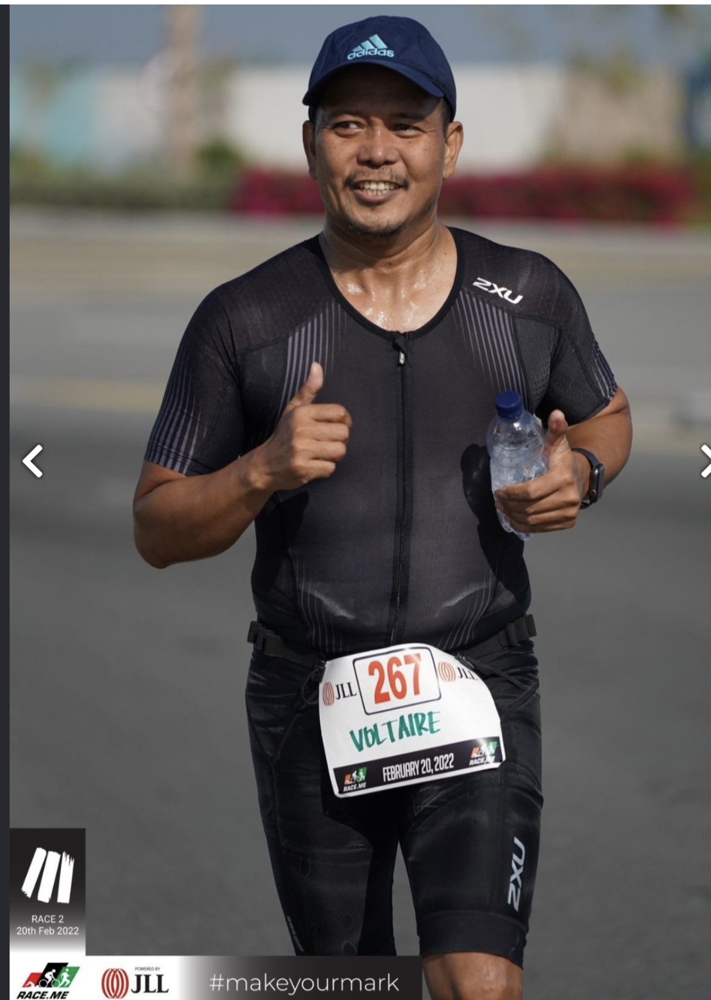
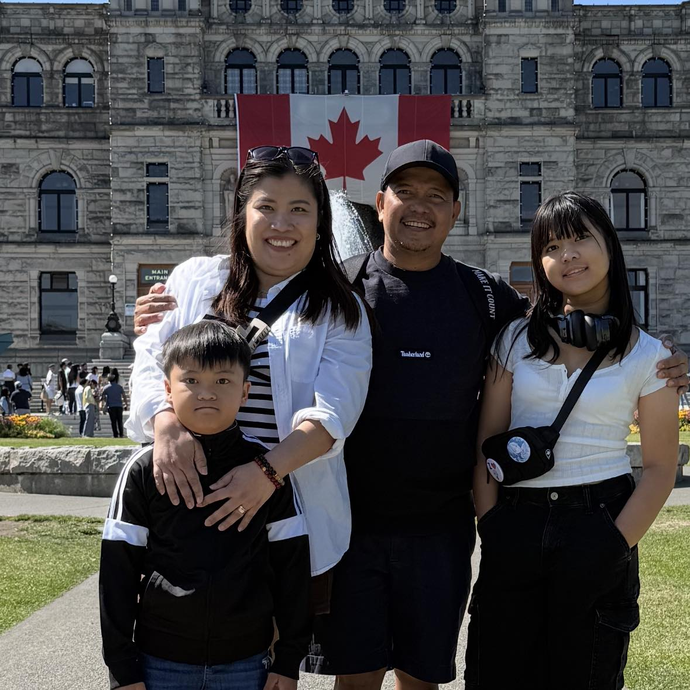
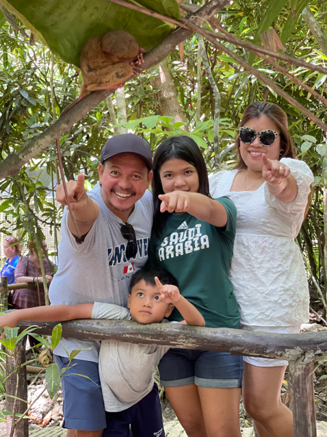
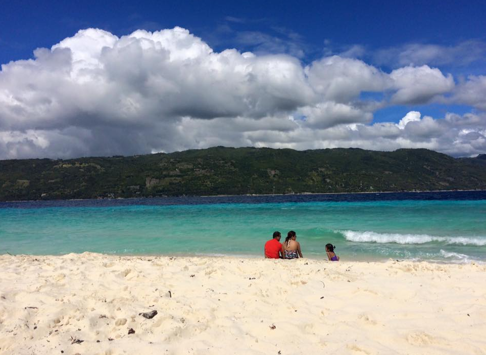

About Me
💼Career: Voltaire Jomuad Pascual is a customer operations and logistics professional with expertise in import and export operations, process improvement, and risk and control. He currently serves as a B2B E-Commerce Portal Analyst, supporting organizations in their digital transformation and digital commerce platforms.
🎓Education: He holds a Bachelor’s degree in Customs Administration, a Certificate in Health Care Services, and is currently pursuing a Diploma in Computer Science at UP Open University.
🌍Global Experience: With more than 20 years of international experience in the United Arab Emirates, he has worked with professionals from diverse cultures and nationalities.
🌱Personal Mission: Passionate about continuous learning, he strives to use knowledge and experience to create meaningful impact for himself, his family, and his community.
Hobbies & Interests




Sports
I enjoy staying active with my family through running, biking, and swimming, and we take every opportunity to challenge ourselves with these activities. Participating together has not only been a source of fun and bonding but has also strengthened our discipline, resilience, and goal-oriented mindset, teaching us the value of persistence and teamwork.




Traveling
I love traveling with my family and discovering new cultures, traditions, and cuisines. Each trip strengthens our bond while giving me a deeper appreciation for diversity and global perspectives.